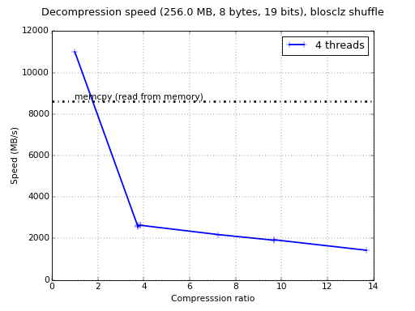
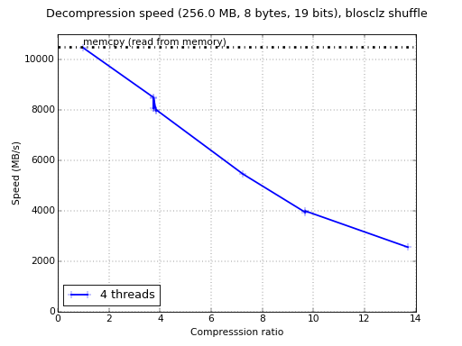
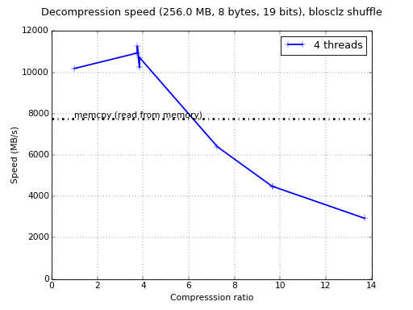

Hairy situation of Microsoft Windows compilers
Recently -- and to the requirement of a customer who recently sponsorized us -- I struggled a lot trying to get the maximum performance out of Visual Studio compilers. Here there are some quick benchmarks to show you an overview of the kind of performance that C-Blosc can reach on Windows.
First, let's use Visual Studio 2008 32-bit (extremely common platform because Python 2 still requires this compiler) and see how C-Blosc performs for decompressing on my laptop with Windows 7 Pro (64-bit) with an Intel i5-3380M @ 2.90GHz:
Now, let us see how the same benchmark performs with Visual Studio 2013:
Well, there is an important boost in speed, not only because a native 64-bit compiler has been used, but also because natural improvements in compiler technology.
At this point I wondered whether Visual Studio 2013 is doing just a decent job or if there is still some performance that can still be squeezed. So what kind of performance other compilers for Windows are reaching? For checking this, I tested the excellent MinGW-w64 compiler (thanks to Jack Pappas for suggesting this!). Here it is the result:
So, one can be seen that GCC 4.9 (included in latest Mingw-w64) can reach a performance that is still far beyond of what you can reach with modern Microsoft compilers (specially for lower compression levels, which is an important scenario when maximum speed is required), and very close to what I get on Linux.
Possibly the newest Visual Studio 2015 would allow more performance, but IMO, there is still some time until this is more spread, whereas GCC 4.9 (with GCC 5.1 starting to show up) is already shipping in many distributions, Windows and Mac OSX, which gives GCC a lot of advantage with respect to Visual Studio.
With regards the reason on why GCC shows that much performance for C-Blosc is probably a consequence of how it has been developed. It turns out that C-Blosc main development platform was (and still is) Linux/GCC, and after many profile/optimize cycles, this tends to favor that combination respect to others.
Provided this, and regarding the original request to reach optimal performance on Windows / Visual Studio 2013 64-bit environments, I ended implementing an example where existing Visual Studio applications can dynamically link a C-Blosc DLL that is in the PATH. You can see how this technique works at: https://github.com/Blosc/c-blosc/blob/master/examples/win-dynamic-linking.c
This is quite interesting because at compilation time you don't need to make reference to the C-Blosc DLL at all. I.e. the next is enough for compiling the example above:
cl /Ox /Fewin-dynamic-linking.exe /I..\blosc win-dynamic-linking.c
And that's all. After that, you only need to place the C-Blosc DLL anywhere in your PATH and it will be dynamically detected. I have tested that with different combinations of compilers (e.g. Visual Studio for the app, and MinGW-w64 for the DLL library) and it works beautifully. I think this is quite powerful and certainly I don't know an equivalent technique for Unix (although it probably exists also), allowing to use top-performance DLLs in your apps using different compilers in a quite easy way.
In case you have more hints on how to get better performance on Windows, please tell us.
Comments
Comments powered by Disqus